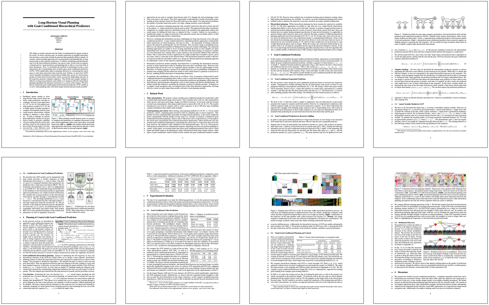

with Goal-Conditioned Hierarchical Predictors
The ability to predict and plan into the future is fundamental for agents acting in the world. To reach a faraway goal, we predict trajectories at multiple timescales, first devising a coarse plan towards the goal and then gradually filling in details. In contrast, current learning approaches for visual prediction and planning fail on long-horizon tasks as they generate predictions (1) without considering goal information, and (2) at the finest temporal resolution, one step at a time. In this work we propose a framework for visual prediction and planning that is able to overcome both of these limitations. First, we formulate the problem of predicting towards a goal and propose the corresponding class of latent space goal-conditioned predictors (GCPs). GCPs significantly improve planning efficiency by constraining the search space to only those trajectories that reach the goal. Further, we show how GCPs can be naturally formulated as hierarchical models that, given two observations, predict an observation between them, and by recursively subdividing each part of the trajectory generate complete sequences. This divide-and-conquer strategy is effective at long-term prediction, and enables us to design an effective hierarchical planning algorithm that optimizes trajectories in a coarse-to-fine manner. We show that by using both goal-conditioning and hierarchical prediction, GCPs enable us to solve visual planning tasks with much longer horizon than previously possible.
Goal-Conditioned Hierarchical Prediction and Plannning
Our agent performs visual planning by leveraging a goal-conditioned hierarchical model. At each step, a layer of the hierarchy is optimized in parallel, and finer and finer plans are produced with each layer.
Overview of the Algorithm
We propose a novel hierarchical goal-conditioned predictive model, as well as a hierarchical planning algorithm. The predictive model (left) is goal-conditioned, so it only predicts trajectories that reach the goal. It is also hierarchical, which allows it to scale to long horizons of more than 500 time steps. In order to plan, we optimize over a trajectory of latent states (center). The planning algorithm is recursive, and proceeds by iteratively subdividing the trajectory to be optimized. In each step, it optimizes a single subgoal in between two subgoals that are already planned. In order to execute the plan, we use an online inverse model (right) that takes in the current obseration and produces the action to reach the next latent state in the plan.
Prediction Results
Method
Ground Truth
GCP-tree
GCP-sequential
DVF (Liu'17)
CIGAN (Wang'19)
9 rooms
25 rooms

Pick&Place

{kind=link}
{kind=link}
{kind=link}
{kind=link}
{kind=link}
Our method is able to perform goal-conditioned prediction even over long-horizons, such as the 25-room data (200 frames) or Human 3.6M data (500 frames). Prior work based on pixel interpolation (DVF) or latent interpolation (CIGAN) fails to scale to such long horizons. Moreover, we show that our method is able to generate multiple plausible samples for the same start and goal, which is crucial to perform effective trajectory optimization for planning.
Planning Results

Conventional visual model-predictive control approaches (left) struggle to plan paths to long-horizon goals due to an exponential increase in the number of trajectories that need to be searched over. In contrast, we show that our planning approach based on goal-conditioned predictors (GCPs) can reliably reach goals that are hundreds of steps away (middle). By combining GCPs with the hierarchical planning approach described above, we are able to plan more efficiently, allowing the agent to reach long-horizon goals faster (right).
Source Code
We have released our implementation in PyTorch on the github page. Try our code!
|

|
Citation |
|
@misc{pertch2020long,
title={Long-Horizon Visual Planning
with Goal-Conditioned Hierarchical Predictors},
author={Karl Pertsch and Oleh Rybkin
and Frederik Ebert and Chelsea Finn
and Dinesh Jayaraman and Sergey Levine},
year={2020},
Booktitle={NeurIPS}
}
|